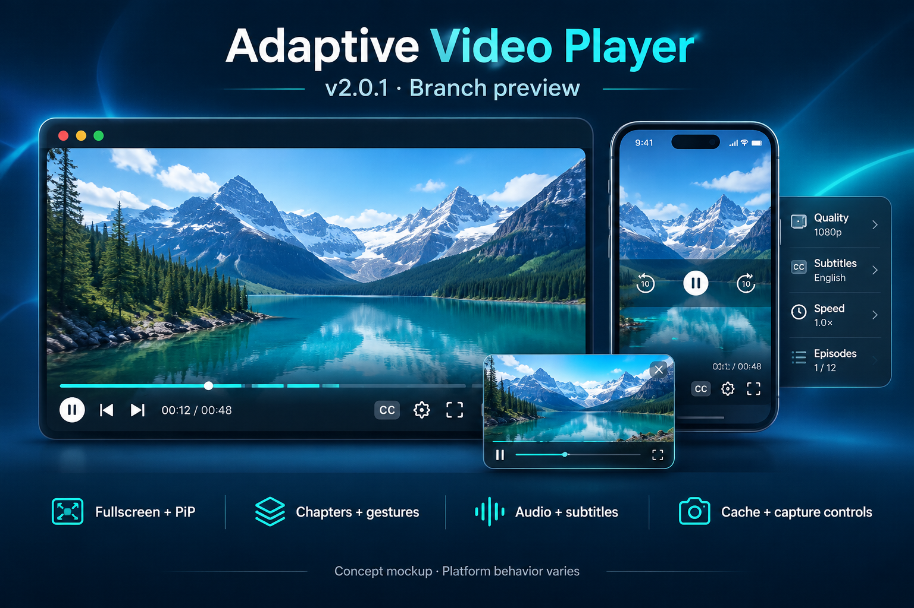
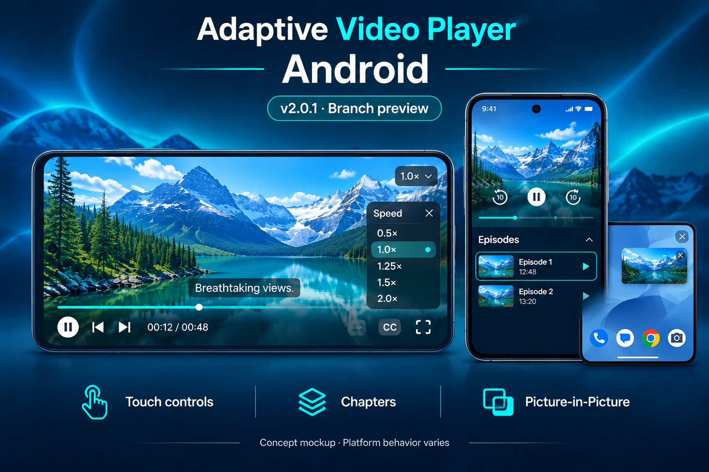
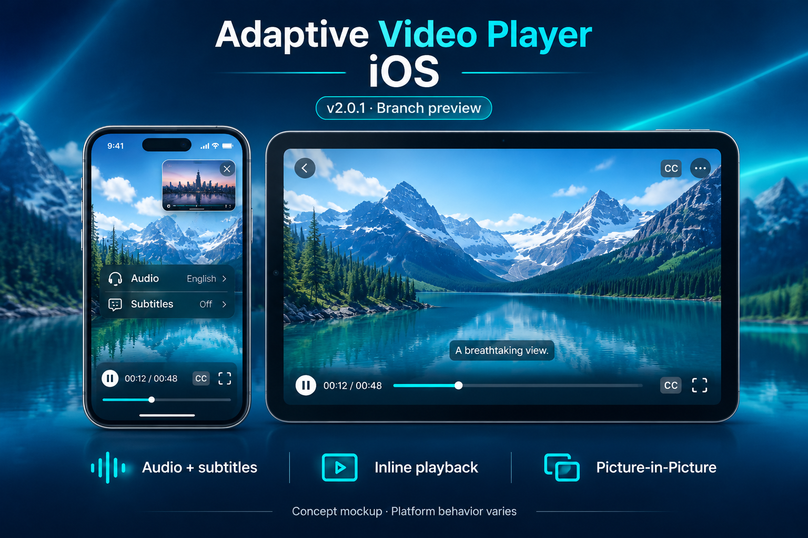
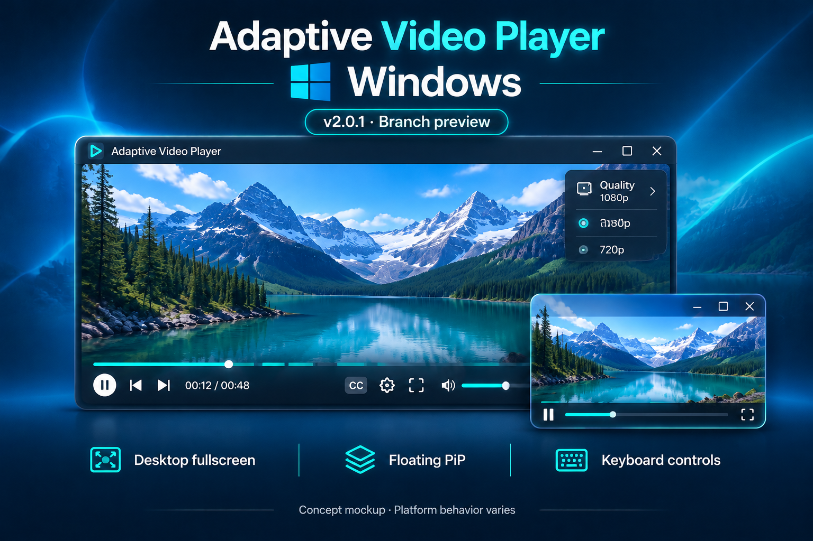
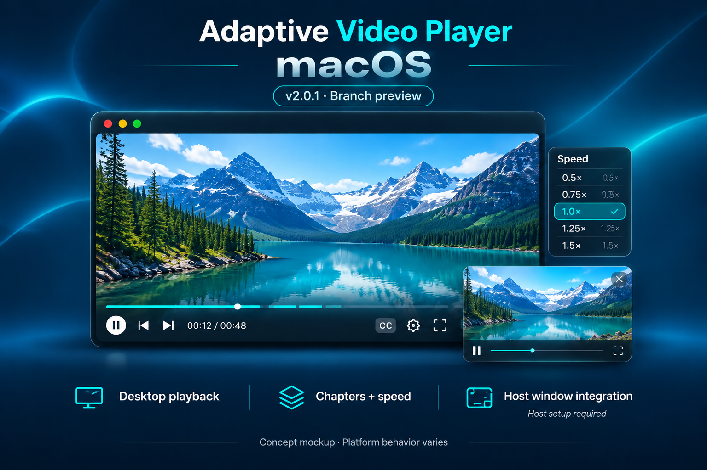
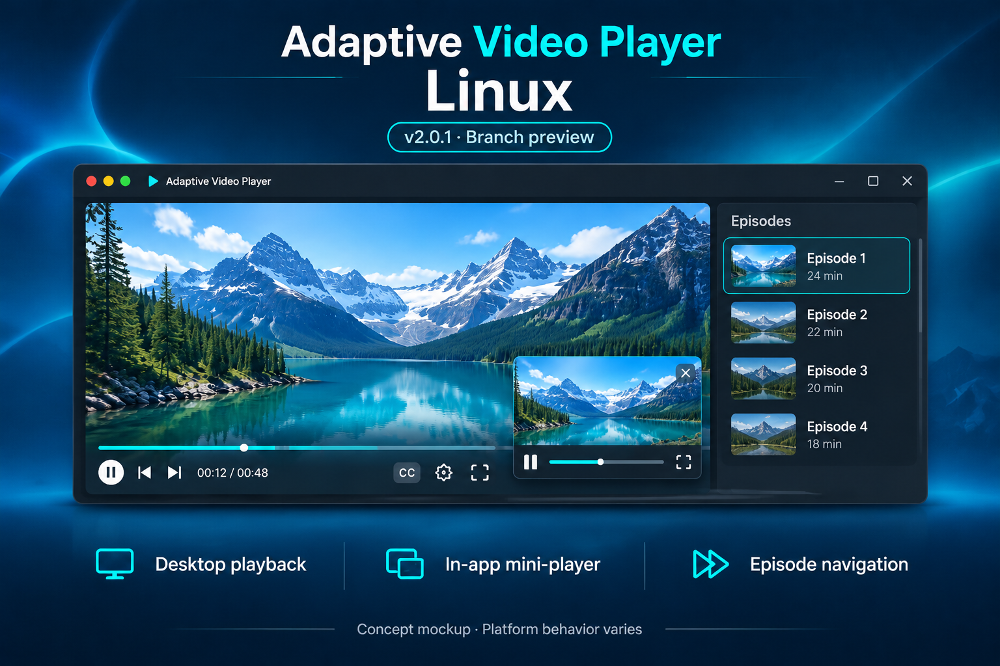
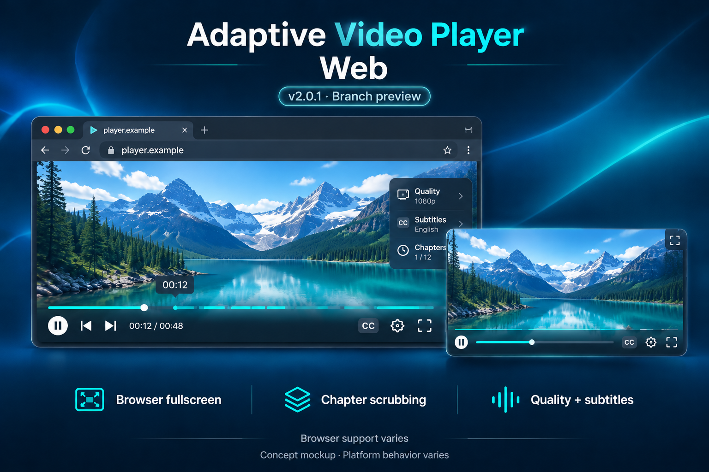

Fullscreen + PiP
Browser fullscreen, desktop window handling and floating playback controls, with background PiP integration where supported.
Fullscreen, floating playback and richer controls for your Flutter video experience. Explore this branch before it joins the stable release.
feature/html5-fullscreen-controls compared with master (v1.3.3).

Historical snapshot; not a live counter or unique-user count.
The candidate needs its own assessment.
A community milestone shared with its snapshot context.
The live score page showed 940 downloads and 19 likes when checked on November 7, 2026; the package API returned v1.3.3. Refresh the figures before posting. This preview does not certify release stability or a new 160/160 score.
Six platforms · One visual family
Separate concept designs for Android, iOS, Windows, macOS, Linux and Web. Open an image at full size or download it for your launch post. These AI-generated designs are illustrations, not application screenshots or platform test results.






Asset details and generation prompts · Platform behavior and setup
Since the published baseline
Browser fullscreen, desktop window handling and floating playback controls, with background PiP integration where supported.
Capsule controls, ±10-second seeking, hover/scrub timestamps and a hold-to-2× speed gesture.
Track selection panels, a speed picker and episode navigation connected to your app's callbacks.
Optional network caching and platform-dependent capture controls. Capture controls are not DRM.
Updated YouTube/native integration and a unified VideoConfig API, with adapters and lifecycle handling.
Studio and showcase screens, source examples and translations to help you evaluate the branch.
At 2875131: 22 commits and 273 changed files, including examples, generated files, tests and documentation. See the comparison and migration notes.
| Platform | What to verify |
|---|---|
| Android / iOS | Native PiP, supported OS/device, activity/background settings and playback handoff. |
| Windows | Topmost PiP window, fullscreen restoration and multiple monitors. |
| macOS | Host method-channel integration for desktop window services; use the example implementation. |
| Linux | Backend prerequisites and an in-app mini-player; it does not overlay other applications. |
| Web | Browser support, user activation, CORS and fallbacks. Automatic PiP on tab switching is not guaranteed. |
Try before the merge
dependencies:
adaptive_video_player:
git:
url: https://github.com/ahmedalam782/vidoes_player.git
ref: feature/html5-fullscreen-controlsRun flutter pub get. Pin a reviewed commit for reproducible evaluation. Local edits become visible after they are committed and pushed.
import 'package:adaptive_video_player/adaptive_video_player.dart';
AdaptiveVideoPlayer(
config: const VideoConfig(
videoUrl: 'https://flutter.github.io/assets-for-api-docs/assets/videos/bee.mp4',
autoPipOnBackground: true,
),
);Follow the platform setup and migration notes, then run the example. Report your OS/browser, source type and reproduction steps through GitHub issues.
Release preparation
This checklist saves manual reminders in this browser when storage is available. Ticking a box does not run a command.
0 of 6 completed
dart format --output=none --set-exit-if-changed lib test
flutter analyze
flutter test --coverage
flutter pub outdated
flutter pub publish --dry-runRun each separately and resolve failures. Follow the full launch guide for builds, platform checks, scoring and publication. Read current verification evidence before declaring the candidate stable.
Share the preview
Invite testing before merge. Attach the concept image. Open both preview and post-publication drafts.